| Integrante | Carne |
|---|---|
| Velveth Sarai Chavez Mejia | 0901-23-6269 |
| Nills Berducido Gomez | 0901-23-14275 |
| Brayan Moises Pinzon Lopez | 0901-23-10511 |
| Brian Andree De La Cruz Sosa | 0901-23-6124 |
| Gabriela Pinto Garcia | 9959-23-1087 |
| Carlos Eduardo Chin Caal | 0901-23-5686 |
| Jose Xavier Bolanos Tenas | 0901-23-2128 |
| Introduccion | ................................................ | 4 |
| Filtrar por nombre del reporte | ................................................ | 5 |
| Ingresar el nombre del reporte | ................................................ | 5 |
| Ejecutar el filtro | ................................................ | 5 |
| Resultado del filtro por nombre | ................................................ | 6 |
| Filtrar por fecha del reporte | ................................................ | 7 |
| Seleccionar la opcion de fecha | ................................................ | 7 |
| Ingresar la fecha | ................................................ | 7 |
| Seleccionar la fecha mediante el calendario | ................................................ | 8 |
| Ejecutar el filtro por fecha | ................................................ | 8 |
| Resultado del filtro por fecha | ................................................ | 9 |
| Filtrar por nombre y fecha | ................................................ | 10 |
| Seleccionar ambos filtros | ................................................ | 10 |
| Ejecutar ambos filtros | ................................................ | 10 |
| Resultado de ambos filtros | ................................................ | 11 |
| Casos en los que no se encuentran resultados | ................................................ | 12 |
| El nombre no coincide con la fecha | ................................................ | 12 |
| La fecha no coincide con el nombre | ................................................ | 12 |
En esta ayuda se explica el funcionamiento del boton Aplicar filtro del modulo Reporteador. Este boton permite realizar busquedas de reportes utilizando diferentes criterios, como el nombre del reporte, la fecha del reporte o ambos filtros al mismo tiempo.
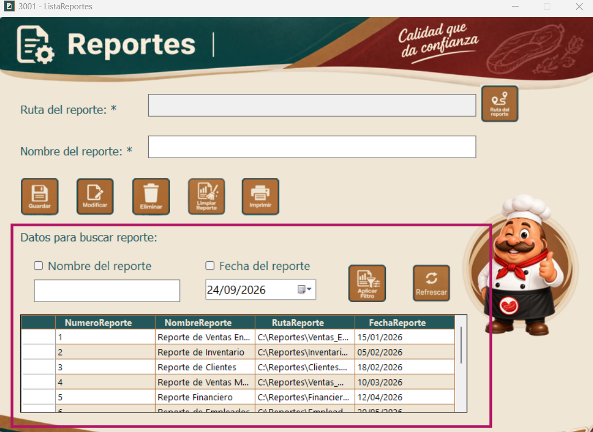
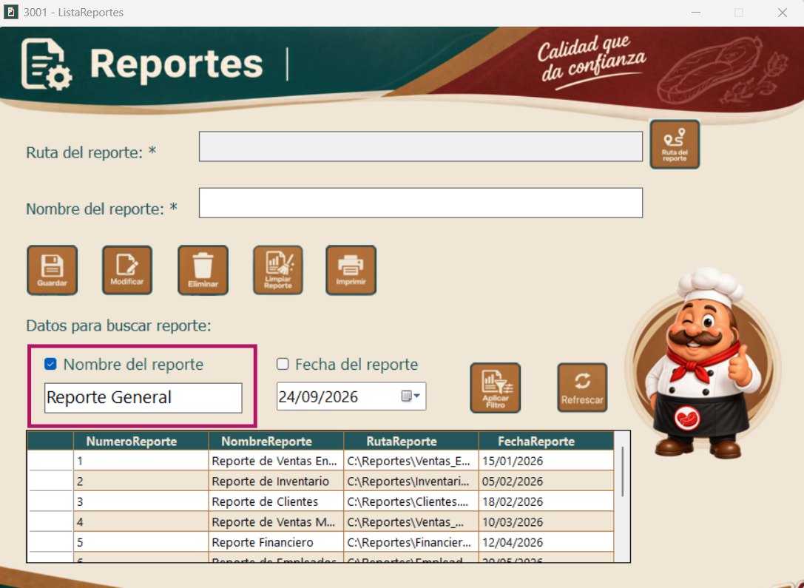
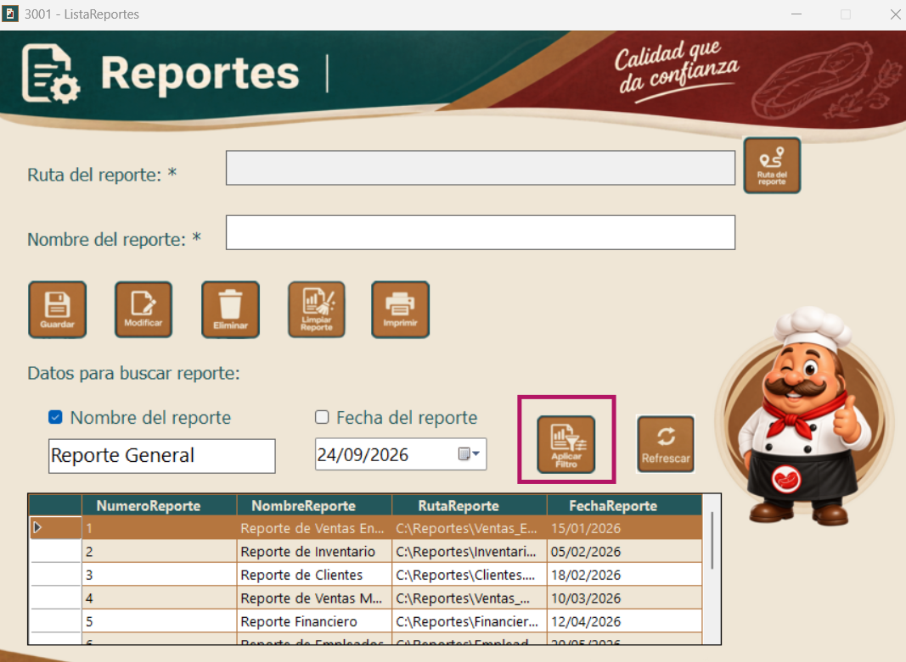
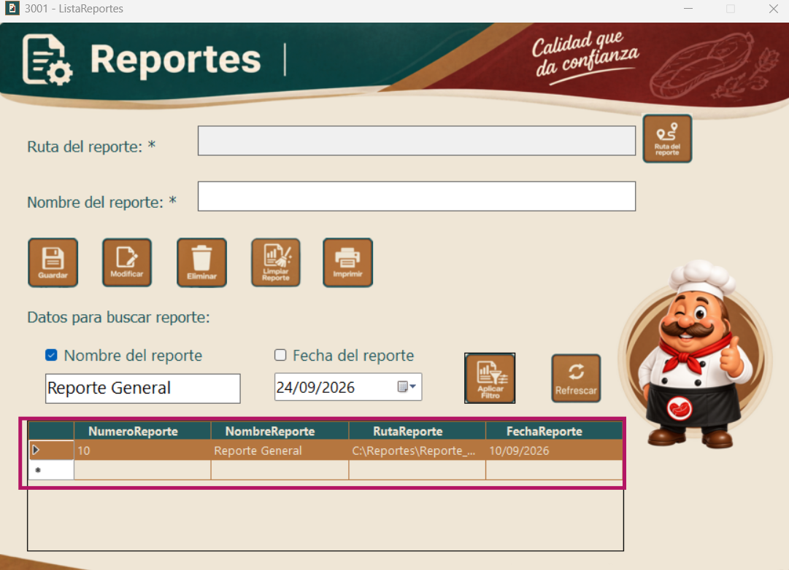
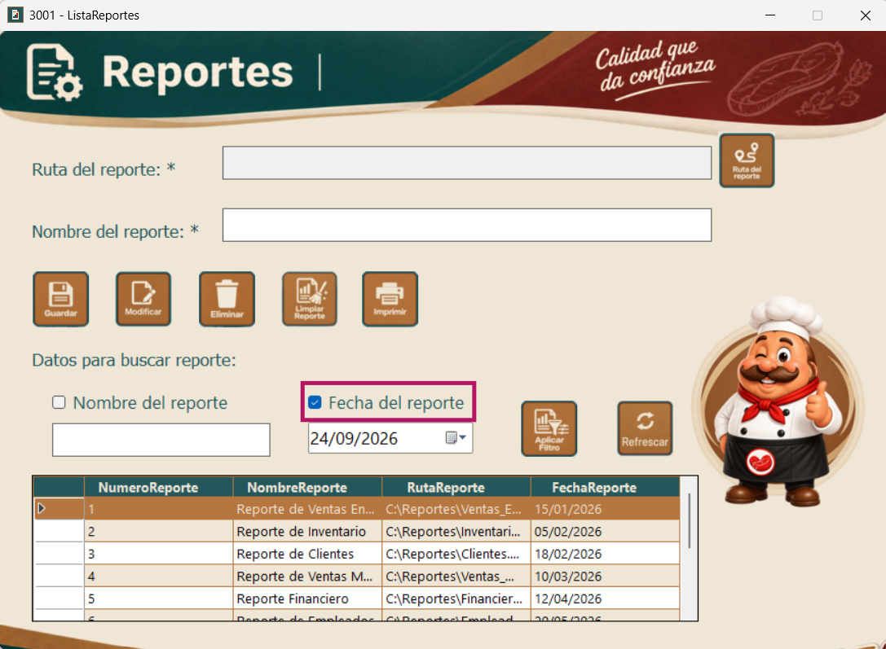
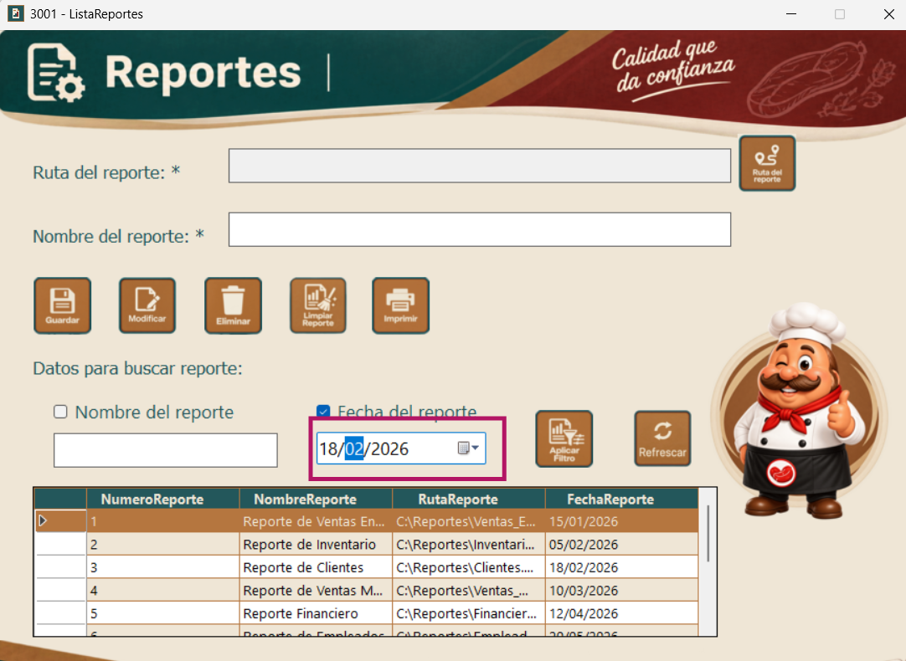
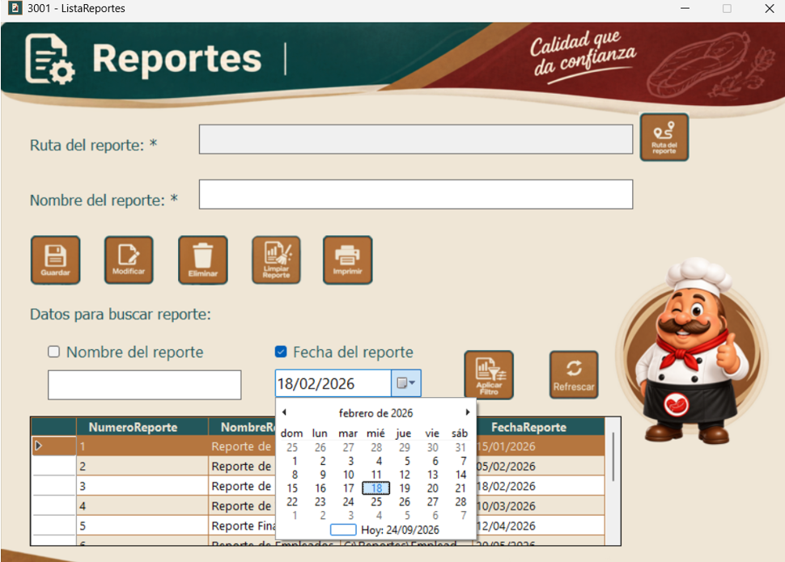
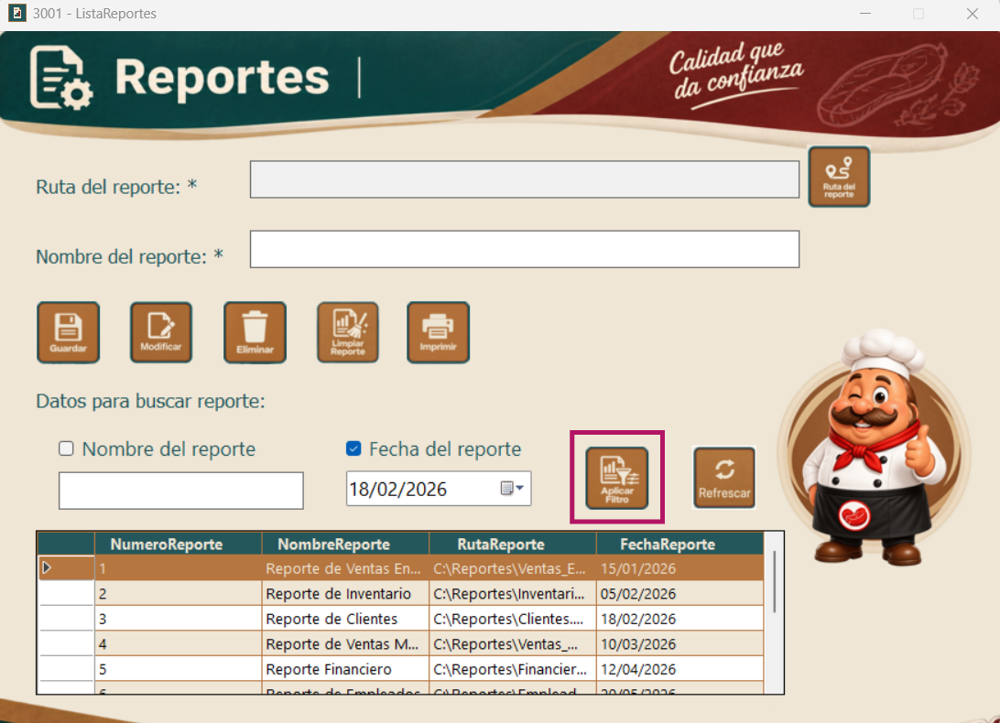
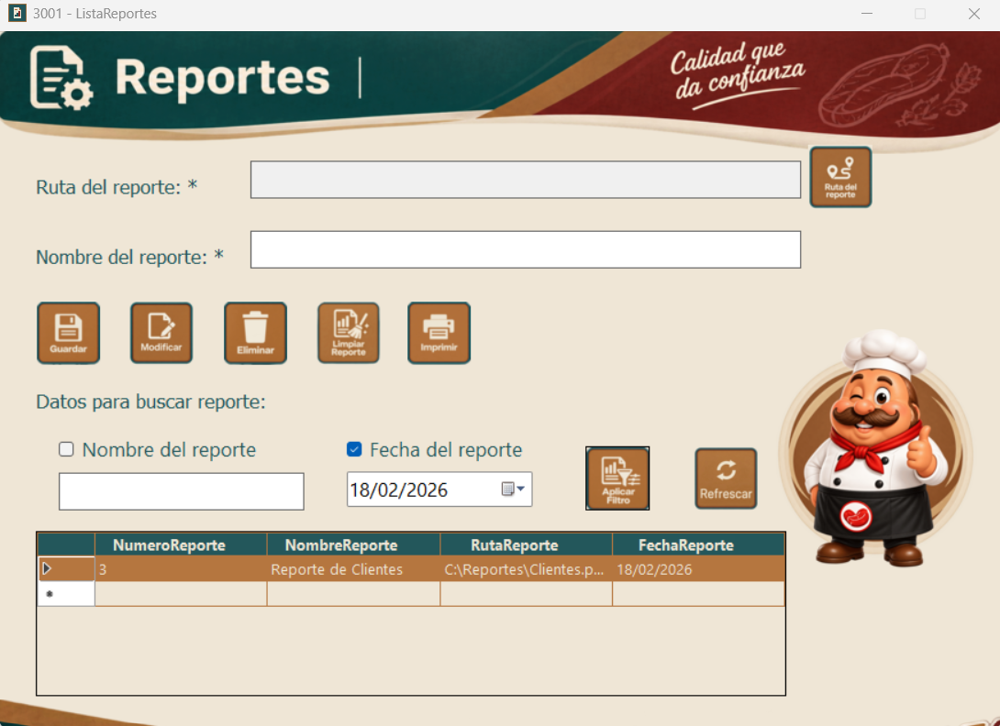
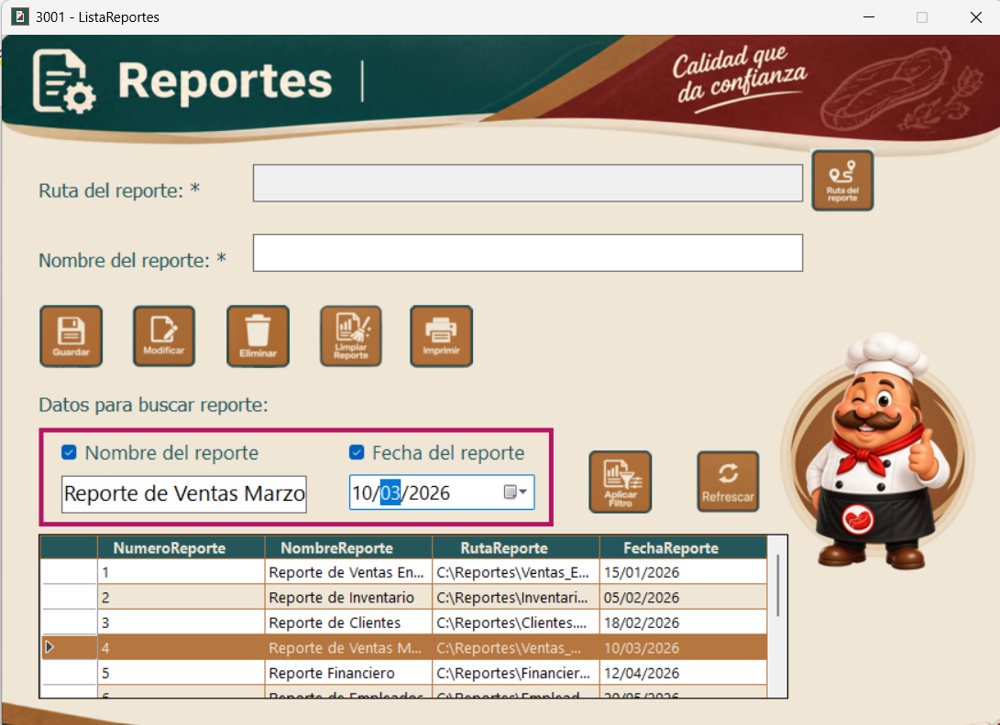
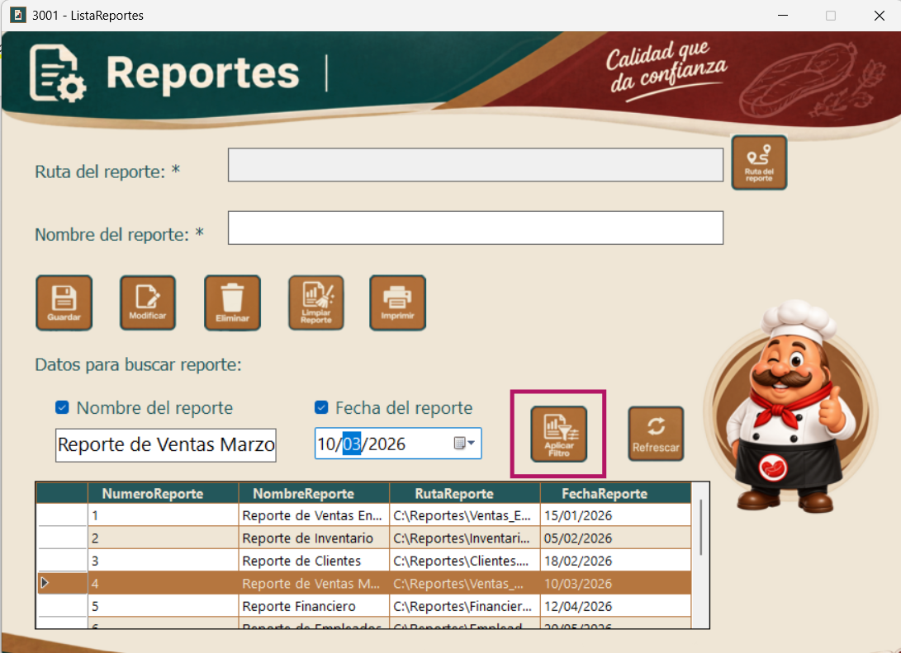
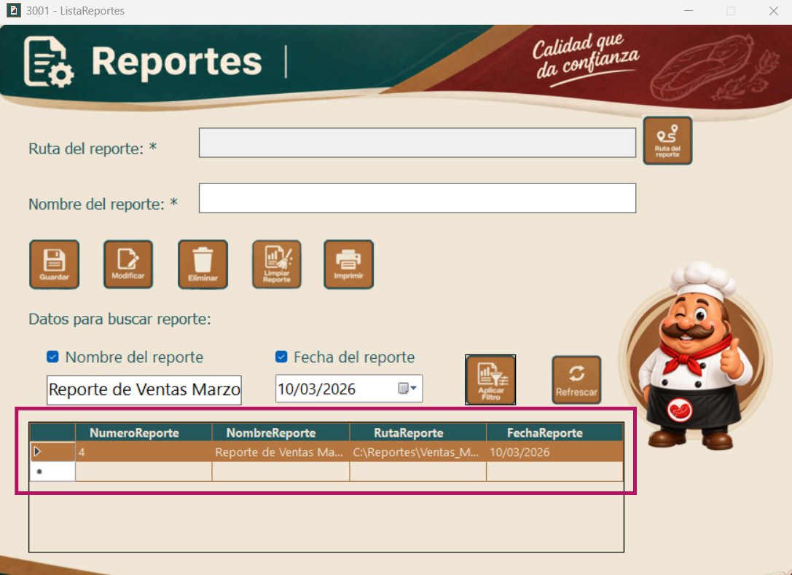
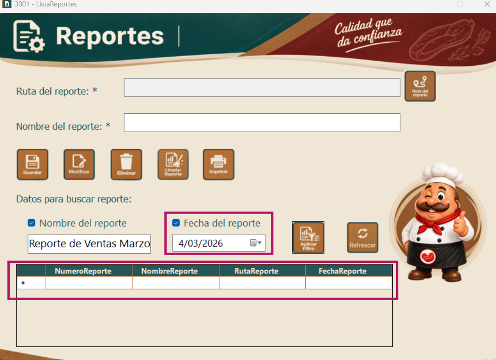
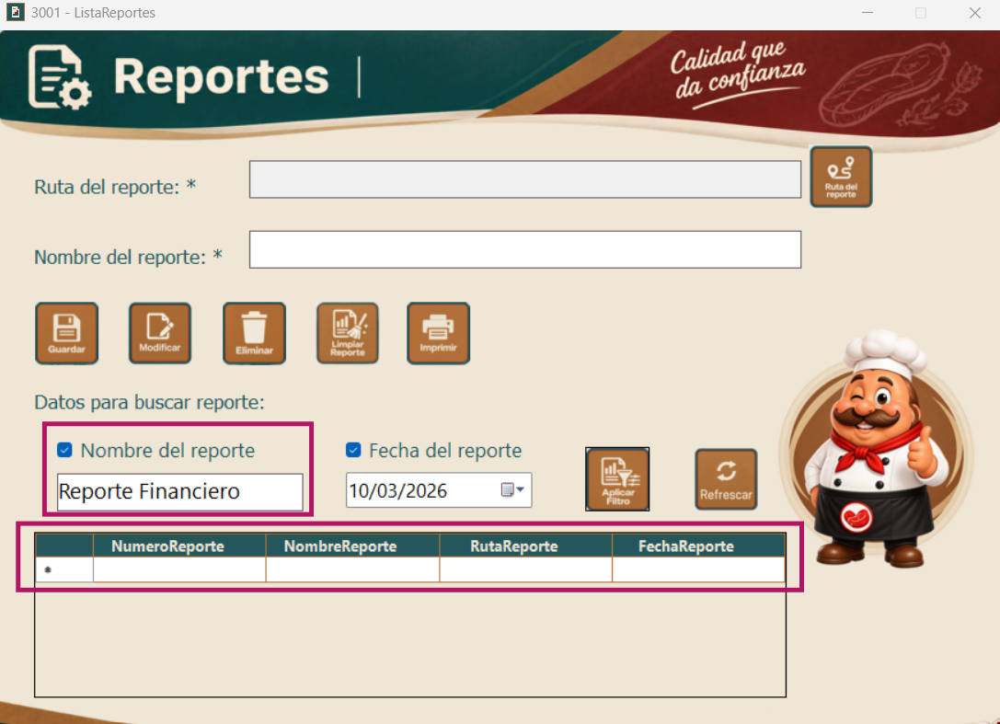